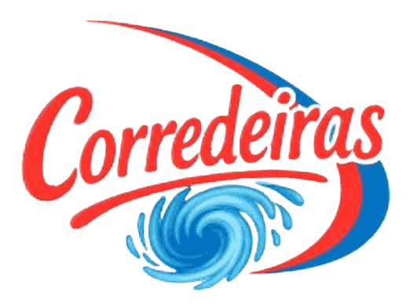
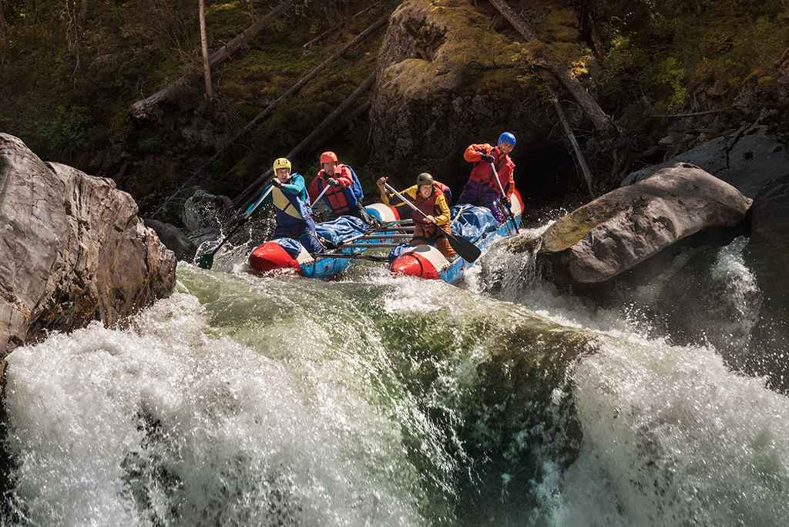

O suor, os sorrisos e a energia indescritível de quem acaba de domar as águas. Na Corredeiras, cada gota d'água conta uma história de superação e pura adrenalina. Mais do que um esporte, nós entregamos a verdadeira alma da natureza para você.


O suor, os sorrisos e a energia indescritível de quem acaba de domar as águas. Na Corredeiras, cada gota d'água conta uma história de superação e pura adrenalina. Mais do que um esporte, nós entregamos a verdadeira alma da natureza para você.
A Corredeiras nasceu em 2012, não em um escritório, mas nas margens de um rio agitado. Um grupo de três amigos, apaixonados pelo ecoturismo e guias de rafting veteranos, percebeu que a maioria das agências entregava apenas um passeio, quando o que as pessoas realmente buscavam era uma transformação.

Começamos com apenas dois botes e uma van emprestada, operando aos finais de semana para amigos e aventureiros locais. Nosso foco sempre foi inegociável: segurança máxima sem sacrificar a emoção. O boca a boca fez o seu trabalho. A paixão que tínhamos por ler as correntes e respeitar a natureza contagiou nossos clientes, e logo a Corredeiras se tornou referência em turismo de aventura.